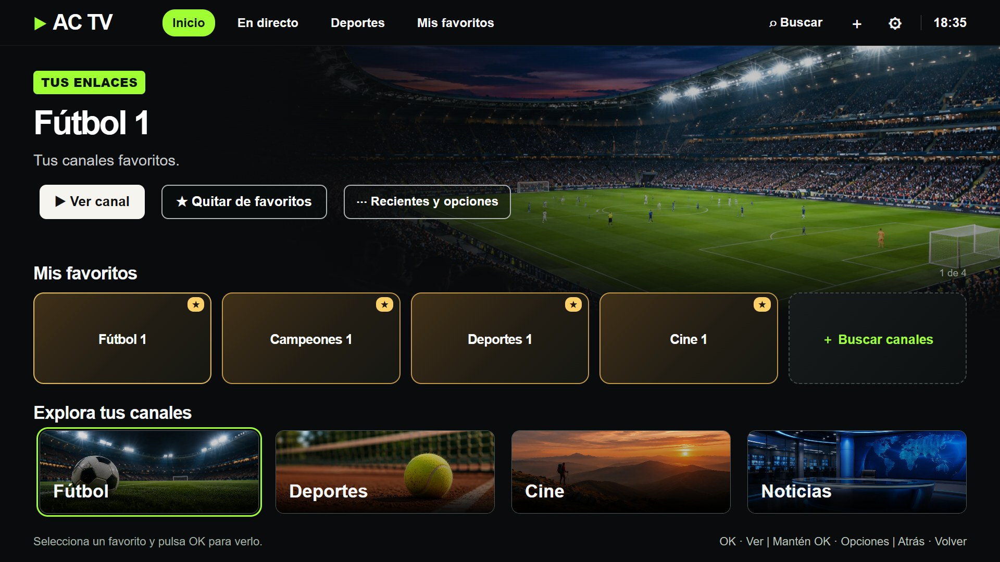

<!doctype html>
<html lang="es">
<meta charset="utf-8">
<title>AC TV para Samsung</title>
<style>
  * { box-sizing: border-box; }
  body { margin: 0; width: 1600px; height: 620px; padding: 56px 72px; font: 32px Arial, sans-serif;
    display: grid; grid-template-columns: minmax(0,1fr) 822px; gap: 54px; align-items: center;
    color: #f1f6ed; border: 2px solid #354e2c; border-radius: 34px;
    background: radial-gradient(ellipse at 80% 110%, #345f1e 0%, transparent 61%),
                radial-gradient(ellipse at 8% 6%, #203a26 0%, transparent 48%), linear-gradient(120deg,#07110b,#0c1d13); }
  .wordmark { display: block; width: 94%; max-width: 450px; margin-left: -18px; }
  h1 { color: #e5efdf; font-size: 43px; font-weight: 600; line-height: 1.13; margin: 7px 0 0; letter-spacing: -1.2px; }
  figure { position: relative; margin: 0 0 26px; border: 2px solid #657261; border-radius: 14px;
    padding: 7px; background: #101510; box-shadow: 0 26px 50px #0009; }
  figure img { display: block; width: 100%; aspect-ratio: 16/9; border-radius: 6px; }
  figure::before, figure::after { content: ''; position: absolute; bottom: -18px; width: 96px; height: 5px;
    background: #828d7c; border-radius: 8px; box-shadow: 0 4px 8px #000a; }
  figure::before { left: 47px; transform: rotate(-11deg); }
  figure::after { right: 47px; transform: rotate(11deg); }
</style>
<section>
  
  <h1>Tus canales en<br>Samsung Tizen</h1>
</section>
<figure></figure>
</html>
